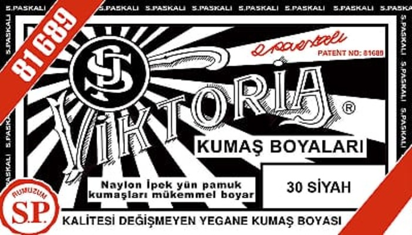

Reaktiv Formula
Boya molekulları parça lifinin içinə işlənir — üzdəki deyil, lifin içindəki rəng. Yuyulduqda solmur.

10 q paket · ~500 q parça üçün (1–2 paltar)
Qara paltar boyası — parça lifinə kimyəvi reaksiya verərək davamlı qara rəng verən tekstil boyasıdır. Reaktiv formula pambıq, kətan və viskozda 30+ yumayadək rəngini qoruyur. Xlor ləkəsi vurmuş, bozarmiş və solmuş qara paltarlar üçün yeganə effektiv həlldir. Evdə pot və 40°C su ilə istifadə edilir. Azərbaycanda viktoria-az.store-dan 5 AZN-ə sifariş vermək olar.
Boya molekulları parça lifinin içinə işlənir — üzdəki deyil, lifin içindəki rəng. Yuyulduqda solmur.
Xlor parçanın rəngini məhv edir. Boyamaqdan başqa həll yolu yoxdur. Reaktiv boya ləkəni görünməz edir.
Peşəkar avadanlıq tələb etmir. Böyük qazan, su, duz, 40 dəqiqə. Fiksator da paketi içindədir.
Zamanla solmuş, boz görünən qara paltarlar üçün ən sadə həll. Bir boyamadan sonra paltar zəngin qara rəng alır.
bozarmiş qara paltar boyasıAğardıcı vuran xlorun bıraqdığı rəngsiz ləkələri boyamaqla aradan qaldırmaq mümkündür.
xlor ləkəsini boyamaq üçün boyaAğ, boz və ya başqa rəngli paltarı qara etmək üçün. Pambıq parçalar mükəmməl doymuş qara alır.
paltar rənglənməsi qara"Şinka" — boyadan çıxmış, uçuk qara parça. Reaktiv boya ilə bir seansda tünd qara rəng qaytarılır.
qara şinka paltar üçün boyaSolmuş qara cins şalvarı boyamaq mümkündür. Pambıq denim reaktiv boyaya mükəmməl reaksiya verir.
paltar üçün kraska qaraSadəcə paltar deyil — corab, çarşab, ev xalatı, parça hissələri. Hər pambıq materialı boyamaq olar.
parça boyası ev şəraitindəkiPaltarı isti suda (40°C) 15 dəqiqə isladın. Xlor ləkəsi olan hissəni qeyd edin. Ağır ləkə varsa əvvəlcə yuyun.
10 q boya tozunu 100ML isti suda həll edin. Qaynayan 5–6L suya töküb 50 q xörək duzu əlavə edin. Duz rəng absorbsiyasını artırır.
Islaq paltarı boya məhluluna salın. Fasiləsiz qarışdırın. Bərabər rəng üçün paltarın hər hissəsi boyaya toxunmalıdır.
Paketi açın — fiksatoru 5-6L soyuq suda həll edin. Boyanan paltarı 15 dəqiqə saxlayın. Soyuq su ilə yaxşıca durulayın.
| Parça Növü | Uyğunluq | Nəticə | Qeyd |
|---|---|---|---|
| Pambıq (100%) | Tam Uyğun | ★★★★★ | Ən yaxşı nəticə |
| Kətan | Tam Uyğun | ★★★★★ | — |
| Viskoz / Rayon | Tam Uyğun | ★★★★☆ | — |
| İpək | Tam Uyğun | ★★★★☆ | 30°C-yə endirin |
| Pambıq+Polyester | Qismən | ★★★☆☆ | Polyester açıq qalar |
| Yun / Kaşmir | Qismən | ★★★☆☆ | Xüsusi yun boyası tövsiyə |
| Saf Polyester / Naylon | Uyğun Deyil | — | Sintetik boya lazımdır |
Qara paltar boyası parça lifinə kimyəvi bağ yaradaraq davamlı qara rəng verən tekstil boyasıdır. Reaktiv boya pambıq, kətan, viskoz kimi sellüloz əsaslı parçalarda lifin içinə işlənir — üzünə deyil. Buna görə yuyulduqda solmur.
Xlor (ağardıcı) parçanın öz rəng molekullarını məhv edir — bu prosesi geri qaytarmaq mümkün deyil. Yeganə həll reaktiv parça boyasıdır. Qara reaktiv boya ilə boyamaq xlor ləkəsini tamamilə görünməz edir. Pambıq parçalarda uğur nisbəti 90–95%-dir.
Bozarmiş qara paltarı evdə boyamaq üçün lazım olanlar:
Proses: parçanı islatmaq → boya məhlulu → 45 dəqiqə boyamaq → fiksasiya. Cəmi 1.5–2 saata paltar yenidən mağazadan çıxmış kimi görünür.
Paltarın bozarması — lifindəki boya molekullarının UV şüası, yuma və sürtünmədən parçalanmasıdır. Reaktiv boya əlavə ediləndə yeni boya molekulları lifə işlənir. Bu proses 30+ yuma müddətinə davamlıdır.
Azərbaycanda, xüsusən Bakıda qara paltar boyası viktoria-az.store saytından onlayn sifariş vermək mümkündür. Bakı daxili 24 saata, regionlara 2–3 iş günündə çatdırılır. Qiymət: 5 AZN.
"Paltar üçün kraska" və "parça boyası" eyni anlayışı ifadə edir. Reaktiv parça boyası parça lifinə molekulyar səviyyədə birləşir — sürtünmür, yuyulduqda çıxmır. Adi kranın içinə işlənir.
"Şinka" — rəngi çıxmış, açıq rəng almış parçadır. Pambıq şinka üçün reaktiv qara boya ən yaxşı həlldir. Boyamadan əvvəl parçanı yaxşıca yuymaq şinkanın boyaya daha yaxşı nüfuz etməsini təmin edir.
Tap.az-da "qara paltar boyası" axtarışında müxtəlif satıcılar çıxır. Orijinal məhsul, keyfiyyət zəmanəti və etibarlı çatdırılma üçün birbaşa viktoria-az.store-dan sifariş vermək tövsiyə olunur.
viktoria-az.store — Azərbaycanda onlayn parça boyası satışında etibarlı ünvan. Bakıda anbar, ölkə daxilindəki kuryer şəbəkəsi ilə sürətli çatdırılma.
Bakı daxili sifarişlər eyni gün işlənir, sabah çatdırılır. İş günləri saat 18:00-a qədər verilən sifarişlər növbəti iş günü çatdırılır.
Ödəniş: Nağd (çatdırılmada), kartla onlayn, bank köçürməsi.
Sifariş: viktoria-az.store
viktoria-az.store saytından onlayn sifariş vermək mümkündür. Bakı daxili 24 saata çatdırılır. Sifariş etmək üçün sayta daxil olun, məhsulu səbətə əlavə edib ödəyin — kuryer evinizə çatdırar.
Çox effektivdir. Xlor ağardıcı parçanın rəngini məhv etdiyi üçün boyamaqdan başqa həll yolu yoxdur. Reaktiv qara boya ilə boyandıqda xlor ləkəsi görünməz olur. Pambıq parçalarda uğur nisbəti 90–95%-dir.
100 q paket orta ölçülü 1–2 paltar (400–500 q parça) üçün kifayət edir. Köynək üçün 1 paket, şalvar üçün 1–1.5 paket. Daha doymuş qara üçün 1 paltar üçün 1 tam paket istifadə edin.
Xeyr. Düzgün fiksasiya edilmiş parça 30+ yuma dövründən sonra da rəngini qoruyur. İlk 2–3 yumada az miqdarda boyar maddə çıxa bilər — bu lifin içindəki deyil, artıq hissədir.
Ümumilikdə 1.5–2 saat: 15 dəq islama + 45 dəq boyama + 15 dəq fiksasiya + durulamaq. Sonra qurutmaq lazımdır.
OEKO-TEX® sertifikatlıdır — ağır metallar, allergen boyar maddələr yoxdur. Boyama zamanı əlcək taxmaq tövsiyə olunur. Boyandıqdan sonra yaxşıca yuyulmuş parça tamamilə təhlükəsizdir.
1. Səbətə əlavə edin
2. Çatdırılma ünvanını daxil edin
3. Ödəyin (nağd / kart)
4. Kuryer çatdırır ✓
Sualınız var? viktoria-az.store saytındakı "Əlaqə" bölməsindən yazın. İş günləri 09:00–22:00 arasında cavablandırılır.
"Köynəyimə xlor vuran ağardıcı ləkəsi əmələ gəlmişdi. Boyamadan sonra ləkənin izi yox oldu. Rəng mükəmməl çıxdı."
"Bozarmiş qara şalvarım vardı, artıq geyinmirdim. Evdə boyayıb geyindim. Bakıda sabah çatdırıldı."
"Pambıq-polyester şalvar idi, polyester tam qara almadı — tünd boz çıxdı. Amma ümumi nəticə yaxşıdır. 100% pambıq üçün çox yaxşı."